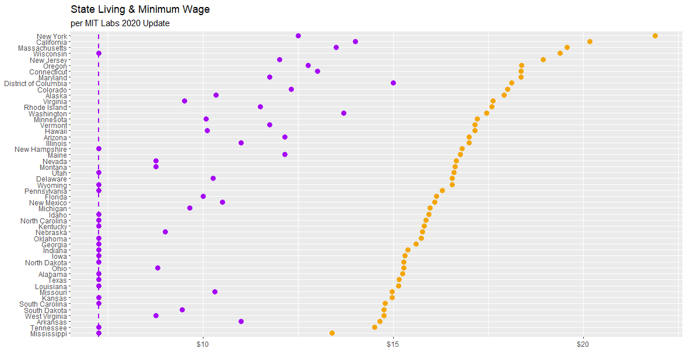
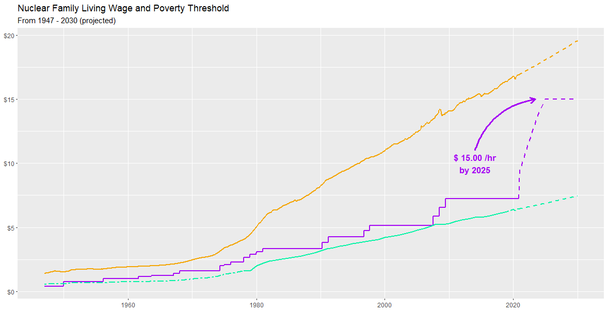

On January 26, House Democrats introduced a bill to raise the federal minimum wage from $7.25 per hour to $15 per hour by 2025. In the weeks leading up to the introduction, there’s been an influx on twitter of bad faith attacks, outright factually incorrect statements, and the type of fact-free arguments that pundits love (to be fair, my twitter timeline is biased towards my left-leaning friends, so the majority of what I see are poorly formulated left-leaning takes, but it’s pretty easy to find similarly bad right-leaning takes). The slew of emotion-driven arguments muddies the water around the minimum wage discussion by avoiding references to data. In an effort to find the signal in all this noise, I dug into publicly available databases to hopefully provide at least one opinion grounded in empiricism, rather than emotion.
My Priors
For transparency’s sake, prior to taking a look into the data behind the minimum wage debate, I was of the belief that the minimum wage should increase and that the proposed $15 per hour seemed reasonable. I didn’t have an empirically driven reason for this belief, just a vague sense that the minimum wage hadn’t risen in a while and had therefore effectively been deflating. Anecdotally, I also hadn’t seen a good defense of keeping the minimum wage static (in fact, most of the arguments against raising the minimum wage that I’d seen were laughably bad). My prior was built on little data, so the analysis I set out to do would either strongly confirm or refute it.
The History of the Minimum Wage
In 1947, the federal government introduced a minimum wage for hourly-compensated labor as part of an amendment to the Fair Labor Standards Act (FLSA). First set at $0.40 per hour, the minimum wage has risen periodically throughout its 80 year history - most recently rising to $7.25 per hour in 2009. Currently, 29 states and D.C. have state minimum wages greater than the minimum wage, and several state minimum wages are increasing in 2021 (either due to ballot initiatives or automatic increases based on cost of living).
I’ve seen a theory float around that, had the minimum wage risen with inflation, it would be $22 per hour today, rather than $7.25 per hour. This is pretty overtly false.* Using the consumer price index (CPI) as the standard measure of inflation, the nominal minimum wage throughout the years can be adjusted to real (aka, inflation-adjusted) dollars:
In inflation-adjusted terms, the minimum wage peaked around 1968 at $12.20 per hour ($1.60 per hour, unadjusted). The current minimum wage of $7.25 per hour, while on the lower end of inflation-adjusted historical values, is not the lowest it’s ever been, and a $15 per hour minimum wage would set a new record for both adjusted and unadjusted minimum wage. Critics of the proposed increase may point to this as reason to keep the minimum wage at its current value - why increase the minimum wage beyond its historical high if it hasn’t even reached its historical low? Supporters, on the other hand, may argue that the minimum wage has never been enough.
The Minimum Wage’s Dance Between Two Thresholds
In 1978, the Census Bureau and Department of Health and Human Services set a baseline administrative threshold to determine eligibility for financial assistance from the federal government. Dubbed the “poverty threshold,” this value was created based on an approximation of the annual budget various family units require to meet basic food & shelter needs (for example, a single adult with no children would need to earn less per hour to meet his needs than, say, a nuclear family of two working adults and two children). The Census Bureau updates the threshold annually by simply adjusting for inflation.
Many groups, however, argue that the poverty threshold doesn’t meet basic needs and instead advocate for a living wage. The living wage is similar in concept to the poverty threshold, but generally much higher, as it includes an expanded food budget (the poverty threshold is based on USDA’s “thrifty” food plan), a budget cap on rent (generally set at ~30% of a monthly budget), healthcare, and childcare, amongst other additions.
Based on MIT Lab’s Living Wage Calculator, we can see that, for a family of four with two working adults, the minimum wage has historically been marginally greater than the poverty threshold, but never reaches (or approaches) the living wage:

Figure 2, above, shows the national minimum and living wages, but these values vary by location. Figure 3 below shows the minimum and living wages for each state. Even states with minimum wages greater than the federal minimum do not meet the local living wage:

The Proposed Increase
So how does the proposed increase to the minimum wage fare against the living wage and poverty threshold in the future? If inflation continues to hold at about 1.6%, the increased minimum wage will get significantly closer to, but not greater than, the living wage in 2025.

Is this enough? Arguably, no, as the proposed increase is less than the estimated living wage. But it is certainly a step in the right direction, and if passed, would likely keep the minimum wage above the poverty threshold for quite some (the poverty threshold rises roughly at a rate of $1 per hour every 10 years).
My Posterior
In general, my prior was confirmed by the analysis - my belief that the minimum wage should be increased has strengthened, and there’s a believable argument that the $15 per hour increase could be raised even higher. There are some additional points that I didn’t discuss above, however, that are still worth noting:
- There are many different groups that have estimated living wages, and results can vary (I used MIT Lab’s data because it was the most readily available & also provided state, county, and metropolitan level data). In general, however, living wage estimates agree that the poverty threshold is far too low, and typically show living wages in excess of $15 per hour.
- The percentage of hourly workers earning the federal minimum wage (or less) has decreased over the years and currently rests at about 1.9%. This is in part due to many states having minimum wages greater than the federal minimum. If the minimum wage increases to $15 per hour, the total number of workers earning the federal minimum wage will likely increase (the linked chart shows spikes that correspond to minimum wage increases in the ‘90s and 2009).
- Some critics of the increased minimum wage argue that the minimum wage is only meant for teenagers working summer jobs. The data doesn’t support this argument - over 80% of federal minimum wage workers are 20+ years old.
- In 2019, the Congressional Budget Office released a report that estimated that job losses due to an increased minimum wage could range between 4.7 million and 0, with a median of 1.3 million lost jobs. The report also notes, however, that about 17 million workers would benefit from the wage increase.
The linked NYT opinion article does give itself the caveat that the $22 per hour figure is based on “inflation and productivity,” though others have repeated this $20+ per hour wage argument without this caveat. The opinion article doesn’t mention any sources or databases, though I expect that the author is using GDP as a proxy for inflation - several articles point out that if the minimum wage had kept pace with GDP growth since 1968, it’d be significantly greater than even the proposed $15 per hour minimum wage. Correlating this to inflation, however, is at best a significant oversight by the author/editor, and at worst intentionally deceptive.
Some Other Notes
As always, source data for this post can be found on github. I made an overt attempt to keep the code a bit cleaner this time around (having a “test area” in the code helped out). It’s still not perfect, and I suspect I’ll just naturally get better at writing neatly formatted scripts as the language becomes more intuitive.
I think I’m going to take a break for a couple weeks from some of these longer posts - I’m currently finishing this a bit after midnight (which is very late for me!) - and between writing this & the Bayes’ Theorem post, I’ve had little time to dedicate to stats. Next week, I’ll put together a less intensive piece to give myself time to push forward with the stats class. Maybe after that I can write a quick post about the accuracy of prediction models, then get into another deep dive. We’ll see how I feel about it in the next couple weeks.